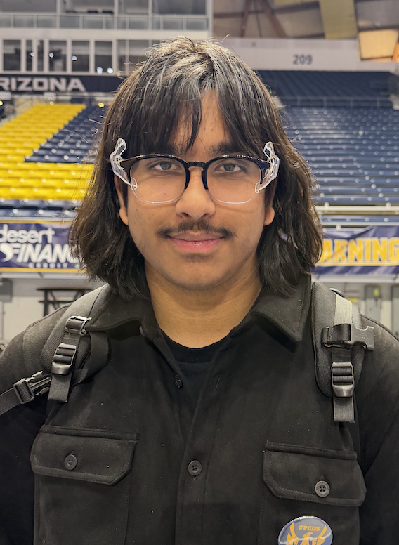

Philosophy brings the mind to take things as they fall, and acquiesce in their distribution, inasmuch as all events proceed from the same cause with itself.
— Marcus Aurelius, Meditations, Book II

I'm a senior in high school.
My research interests are broadly related to statistical and computational methods with a variety of applications in different scientific fields. I'm especially interested in statistical ML, Bayesian methods, and complexity.
E-mail me at: